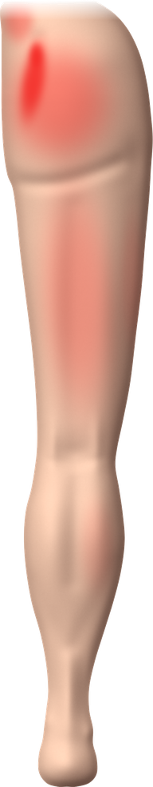

Cara’s SI Joint Fusion Story. A patient from another practice, Texas Back Institute, shares what years of SI joint pain were like and how she got back to the life she loves. Shown here for patient education.
Understanding SI joint pain
Studies show the SI joint is the source of pain for roughly 15–30% of patients with persistent low back pain.
About the SI joint
The SI joints absorb movement between the spine and hips. Aging, arthritis, injury, or pregnancy can leave the bones rubbing together — pain that often mimics a lower back or disc problem.

Common signs of SI joint pain
- Lower back pain
- Isolated pain in one SI joint
- Sciatic-like pain in buttocks or leg
- Hip/pelvis/groin pain
- Reduced range of motion
- Pain climbing stairs or running
- Pain lying on one side
- Leg numbness or weakness
- Disrupted sitting patterns
- Difficulty moving from sitting to standing
- Sleep disturbances due to pain
Conventional care not working?
- Physical therapy
- Chiropractic care
- Medication
- Therapeutic injections
- Radiofrequency ablation (RFA)
Minimally Invasive SIJ Fusion
There’s good news! We now offer Minimally Invasive SIJ Fusion, a procedure that gets you back to life faster. It minimizes discomfort and recovery time, helping you regain control of your pain and get back to the activities you love.
SI joint quick facts
The basics that medical sources agree on.
What can cause SI joint pain
Pain can start when the joint is irritated, inflamed, too loose or too stiff. Common causes include:
How SI joint pain is diagnosed
There is no single test. Doctors put several pieces of information together. Many practices follow these steps:
- Your historyWhere it hurts, what makes it better or worse (sitting, stairs, rolling over in bed, standing up), and which treatments you have already tried.
- A hands-on examYour doctor presses on the joint area and moves your hips and legs into positions that stress the SI joint. These are called provocation tests, and the results are usually weighed together.
- ImagingX-ray, MRI or CT can rule out other causes and show arthritis or inflammation in the joint. A normal scan does not rule out SI joint pain.
- A diagnostic injectionNumbing medicine is placed in or near the joint, usually with live X-ray guidance. A large drop in pain, often 50 to 75 percent or more depending on the program, suggests the joint is the source.
Treatment options, step by step
Most people start with the simplest options and move up only if they need to. Tap a step to read more.
1 · Rest, activity changes, ice and heat
Easing off the activities that flare the pain, and using ice or heat for short periods, can calm an irritated joint. Your doctor or therapist can suggest ways to sit, sleep and move that put less strain on it.
2 · Medicines
Over-the-counter pain relievers such as acetaminophen or anti-inflammatory medicines (NSAIDs) may help. A doctor may also prescribe a muscle relaxant or a topical medicine.
Always follow the label, and check with your doctor or pharmacist first, especially if you have stomach, kidney or heart conditions or take blood thinners.
3 · Physical therapy and exercise
A therapist can teach stretching and strengthening for the hips, core and pelvis, and movement habits that protect the joint. Hands-on (manual) therapy and a pelvic support belt (SI belt) are sometimes added.
4 · Injections
A corticosteroid (anti-inflammatory) injection into the joint can calm pain and inflammation. Relief varies and is often temporary, and the number of steroid injections per year is limited.
A similar injection of numbing medicine is also used to help confirm the diagnosis.
5 · Radiofrequency ablation (RFA)
A small probe uses heat to quiet the nerves that carry pain signals from the joint. It is done with X-ray guidance, usually as an outpatient procedure. Relief can last for months, and because nerves can regrow, it is sometimes repeated.
6 · Minimally invasive SI joint fusion
Fusion is usually considered when the SI joint has been confirmed as the source of pain and nonsurgical care has not helped, often after pain has lasted more than six months. Through a small incision, the joint is stabilized so the bones can heal together and stop the painful motion.
Insurance plans often ask for records of the earlier treatments, so ask the office what your plan requires. See what Dr. Beck offers.
Get ready for your visit
Questions to ask your doctor
- How sure are you that my SI joint is the source of my pain? What findings point to it?
- Which treatments have I not tried yet?
- What are the benefits, risks and alternatives of each option?
- If fusion is an option: what does the procedure involve, and what is recovery like?
- How will we know whether it worked?
- What will my insurance require?
What to bring
- A list of your symptoms, and what makes them better or worse
- Past treatments with dates and results (therapy, injections, medicines)
- Imaging reports or discs
- Your current medicine list
Patient educational videos
General information about SI joint pain and treatment. Short videos to help you and your family understand what to expect. Each video plays from its original publisher.
Trusted patient resources
Plain-language guides from respected medical centers and public health sources.
The research behind the basics
For readers who want to see the evidence. Plain-language summaries of published studies on how common SI joint pain is and how it is diagnosed.
Common questions and glossary
Is SI joint pain common?
Studies estimate the SI joint is the source of pain in roughly 15 to 30 percent of people with ongoing low back pain. Figures vary by setting and by how the diagnosis was made.
Can an X-ray or MRI show SI joint pain?
Imaging can show arthritis or inflammation and help rule out other causes, but many people with SI joint pain have normal-looking scans. That is why the exam and a diagnostic injection matter.
How is it different from a disc problem or sciatica?
They can feel alike. Disc and nerve problems often cause pain or tingling that follows a nerve down the leg. SI joint pain is often felt on one side of the lower back and buttock and can reach the hip, groin or thigh. Stressing the joint during an exam may bring it on. Your doctor sorts this out with an exam and, when needed, imaging or an injection.
Do I need surgery?
Surgery is not the first step. Fusion is considered when the SI joint has been confirmed as the source of pain and other treatments have not helped, often after pain has lasted more than six months. Ask the office what applies to you.
Glossary of terms
- Sacroiliac (SI) joint
- The joint where the sacrum (the base of the spine) meets the iliac bone of the pelvis. There is one on each side.
- Sacroiliitis
- Inflammation of one or both SI joints.
- Provocation test
- An exam maneuver that stresses the SI joint to see whether it brings on your pain.
- Diagnostic block
- An injection of numbing medicine in or near the joint to find out whether it is the source of pain.
- Radiofrequency ablation (RFA)
- Heat from a small probe, used to quiet the nerves that carry pain from the joint.
- Fusion (arthrodesis)
- Joining two bones so they heal into one, which stops motion at the joint.
Meet Dr. Beck
- BOARD-CERTIFIEDPhysical Medicine & Rehabilitation
- RESIDENCYUniversity of Wisconsin
- MEDICAL DEGREEIndiana University, 2007
Dr. Jeffrey Beck is a board-certified physical medicine and rehabilitation physician. A native of northeast Indiana, he completed both his undergraduate and graduate degrees from Indiana University with high distinction. Dr. Beck also obtained his medical degree from Indiana University in 2007 and continued his training as a physical medicine and rehabilitation resident at the University of Wisconsin.
Dr. Beck joined Wellspring Pain Solutions after spending time with Premier Healthcare and as medical director of the Mayo Clinic Health System Spine Center. His treatment philosophy focuses on improving function and reducing pain to expedite return to work and daily living by utilizing a multidisciplinary evidence-based approach.
Education & training
- Medical School
- Indiana University School of Medicine, 2007
- Residency
- University of Wisconsin
- Board Certification
- Physical Medicine & Rehabilitation
Patient expectations
- Compassionate Care: Care focused on your comfort and well-being.
- Thorough Evaluation: We review your history and symptoms to tailor your plan.
- Clear Communication: We explain your diagnosis and treatment options.
- Collaborative Approach: Your input shapes your plan and health goals.
- Supportive Environment: Your needs come first, every step of the way.
Have questions? Speak with someone who can answer them.
317-340-0342Call or email with any questions you or your family have about the procedure, your pain diagnosis, recovery or what to expect. We can also connect you with a local patient.
Brochure to view or share
The education sections are summarized from the sources linked on this page: Mayo Clinic, Cleveland Clinic, NIH MedlinePlus and the published studies listed above. Summaries are condensed and may leave out details, so see each source for full information. In an emergency, call 911.
Individual results vary. Talk with your physician about the benefits and risks of any procedure. This page is for general information and is not medical advice. Links to outside sites are provided for information only and are not endorsements.